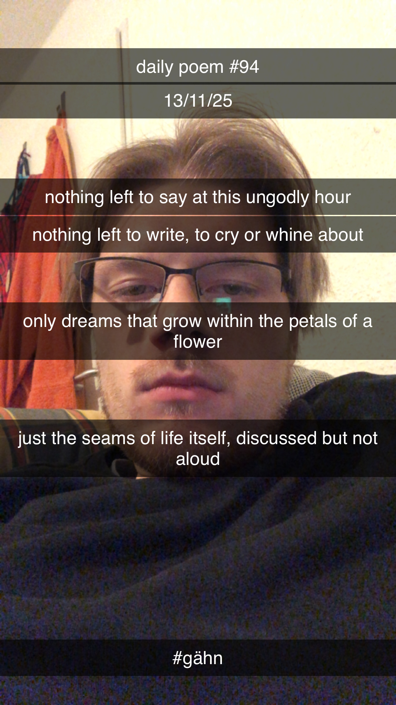

And So the Sun Sank
[94]Nothing left to say at this ungodly hour,
Nothing left to write, to cry or whine about;
Only dreams that grow within the petals of a flower,
Just the seams of life itself, discussed but not aloud.

Nothing left to say at this ungodly hour,
Nothing left to write, to cry or whine about;
Only dreams that grow within the petals of a flower,
Just the seams of life itself, discussed but not aloud.
